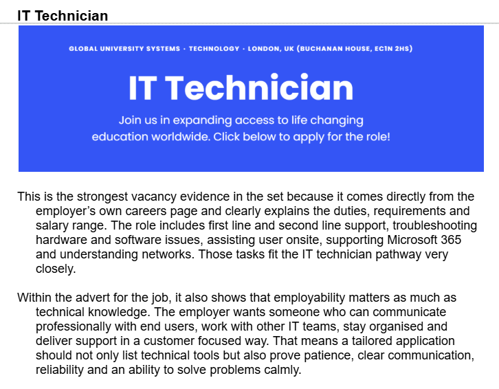
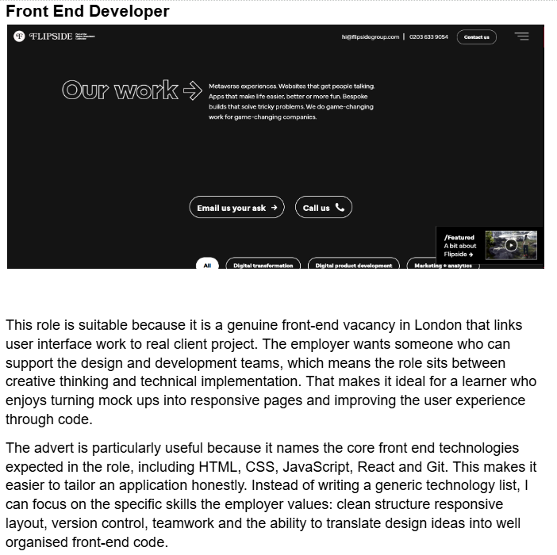
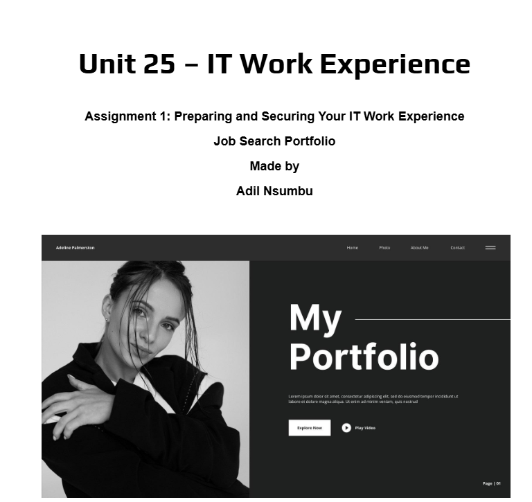

Unit 25 - Professional Practice


Evidence

Assignment Evidence
My work for Unit 25 is attached, including Learning Aim B,C and D
Download CourseworkReflection
During the process of researching different companies, I learned about the skills, qualifications, and personal qualities employers look for when hiring people. I found out that many companies value communication, teamwork, problem solving, and confidence alongside technical skills and experience. This helped me understand how important it is to present yourself professionally when applying for jobs. By creating my own CVs and cover letters, I learned how to describe my skills, achievements, and experiences clearly and professionally. I also improved my writing and organisation skills by tailoring my applications to different companies and job roles. Taking part in mock interviews helped me build confidence and improve my communication skills. I learned how to answer questions clearly, speak professionally, and explain my strengths and experiences more effectively. This experience helped prepare me for real interviews and future job opportunities. In the future, these skills could help me apply for apprenticeships, jobs, and further education opportunities with more confidence and professionalism.